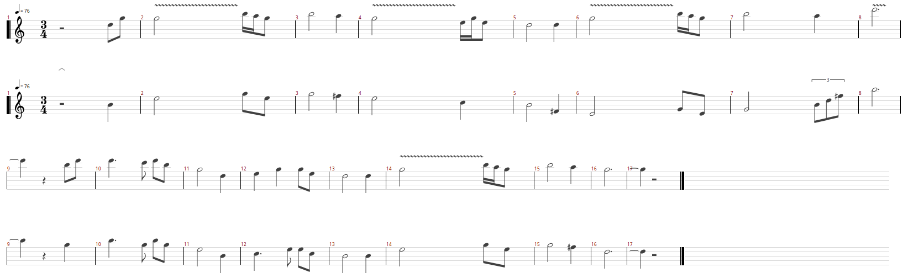
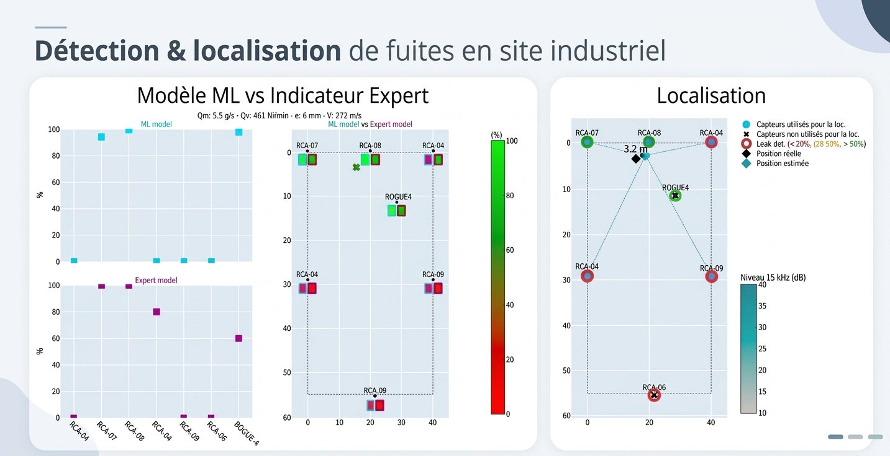
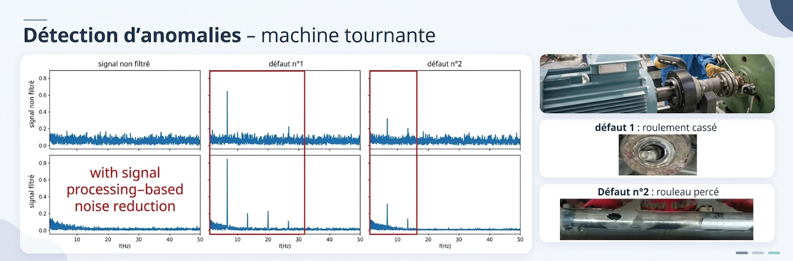
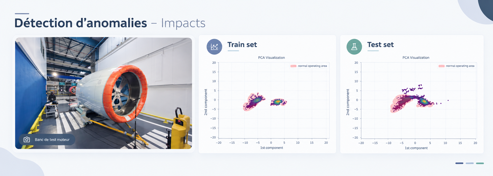
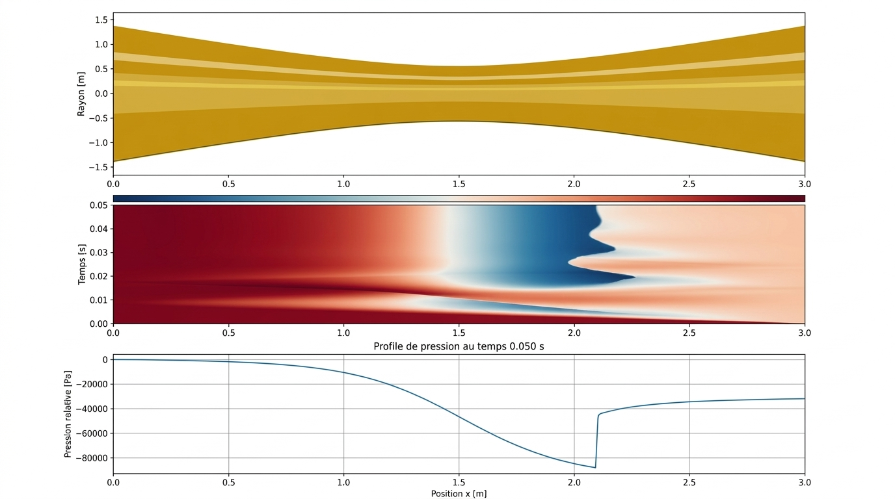
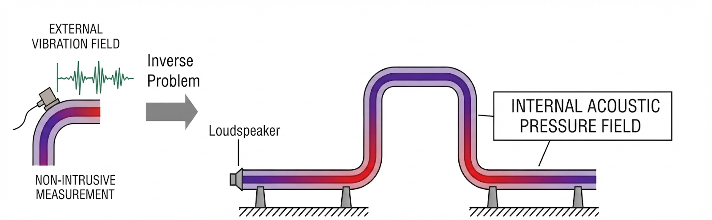
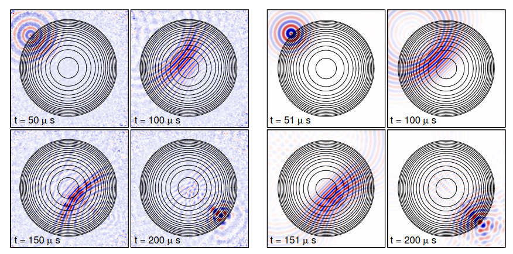

En recherche active : Ingénieur de recherche / R&D · Traitement du signal (DSP) · Acoustique · Systèmes de détection.
Lille / Paris / Bruxelles · hybride ou télétravail · disponible immédiatement.
Actively seeking: Research / R&D Engineer · Signal processing (DSP) · Acoustics · Detection systems.
Lille / Paris / Brussels · hybrid or remote · available now.
ProfilProfile
Ingénieur acousticien et docteur en acoustique (thèse CIFRE), 10 ans d'expérience en R&D et recherche appliquée. Ingénieur traitement du signal (DSP) : conception de systèmes de détection, de classification et de localisation d'événements sonores fondés sur des indicateurs experts, de la recherche à l'industrialisation sur capteurs embarqués. Expertise en acoustique non linéaire, propagation d'ondes, vibro-acoustique, couplage fluide-structure, modélisation physique, simulation numérique et mesures LASER (PIV). Je développe en parallèle des solveurs de synthèse sonore par modèle physique des instruments à vent. Objectif : contribuer à des projets R&D à fort contenu scientifique, du modèle physique à la validation expérimentale.
Acoustics engineer and Ph.D. in acoustics (industrial CIFRE thesis) with 10 years of experience in R&D and applied research. Signal processing (DSP) engineer: design of detection systems for classifying and localizing sound events based on expert indicators, from research to industrialization on embedded sensors. Expertise in nonlinear acoustics, wave propagation, vibroacoustics, fluid-structure coupling, physical modeling, numerical simulation and LASER measurements (PIV). I also develop physical-modeling sound synthesis solvers for wind instruments. Goal: to contribute to R&D projects with strong scientific content, from the physical model to experimental validation.
Une approche transverse, sur l'ensemble du cycle technique d'un produit, alliant expertise théorique et validation sur le terrain :
A cross-disciplinary approach across a product's entire technical cycle, combining theoretical expertise and on-site validation:
CompétencesSkills
Traitement du signal (DSP) & DétectionSignal processing (DSP) & Detection
Traitement numérique du signal audio et vibratoire, analyse spectrale, extraction d'indicateurs experts (features physiques), systèmes de détection et de classification d'événements sonores, localisation de sources, détection d'anomalies, problèmes inverses.
Digital processing of audio and vibration signals, spectral analysis, expert-indicator (physical feature) extraction, sound-event detection and classification systems, source localization, anomaly detection, inverse problems.
Acoustique & PhysiqueAcoustics & Physics
Acoustique non linéaire, propagation d'ondes, vibro-acoustique, couplage fluide-structure, aéroacoustique, turbulence, psychoacoustique, acoustique des salles, synthèse sonore par modèle physique (instruments à vent).
Nonlinear acoustics, wave propagation, vibroacoustics, fluid-structure coupling, aeroacoustics, turbulence, psychoacoustics, room acoustics, physical-modeling sound synthesis (wind instruments).
Modélisation & SimulationModeling & Simulation
Méthodes : modélisation physique, simulation numérique, schémas FDTD et TVD/WENO, solveurs temporels (équations d'Euler quasi-1D, propagation non linéaire), CFD.
Logiciels : COMSOL (multiphysique), AutoCAD 2D-3D, SolidWorks, OnShape.
Methods: physical modeling, numerical simulation, FDTD and TVD/WENO schemes, time-domain solvers (quasi-1D Euler equations, nonlinear propagation), CFD.
Software: COMSOL (multiphysics), AutoCAD 2D-3D, SolidWorks, OnShape.
Mesures & InstrumentationMeasurement & Instrumentation
Mesures acoustiques et vibratoires (capteurs, accéléromètres), mesures LASER (PIV), soufflerie, acquisition et analyse de données expérimentales.
Acoustic and vibration measurement (sensors, accelerometers), LASER measurement (PIV), wind tunnel testing, experimental data acquisition and analysis.
Programmation & OutilsProgramming & Tools
Python (NumPy, pandas, Numba, Pydantic), C/C++ (pybind11), Matlab, LabVIEW, SQLite, Linux (Ubuntu), YAML, Excel.
Langues & RédactionLanguages & Writing
Anglais : courant (écrit, oral, rédaction scientifique)
Espagnol : notions écrites
Rédaction : LaTeX, Word, PowerPoint
English: full professional proficiency (written, spoken, scientific writing)
Spanish: limited working proficiency (written)
Writing: LaTeX, Word, PowerPoint
Projet de recherche personnelPersonal research project
Synthèse sonore des cuivres et des bois par modèle physiquePhysical-modeling sound synthesis of brass & woodwind instruments
L'idée : simuler virtuellement le jeu des cuivres et des bois (trompette, cor, trombone, clarinette, saxophone, etc.) à partir d'une simple partition numérique (.musicxml, .mid, .gp5). Au lieu de reproduire des sons préenregistrés, il s'agit de recréer le fonctionnement physique réel des instruments : souffle, vibration des lèvres ou de l'anche, résonance de la colonne d'air dans le tube et rayonnement du son par le pavillon.
The idea: to virtually simulate the performance of brass and woodwind instruments (trumpet, French horn, trombone, clarinet, saxophone, etc.) from a simple digital score (.musicxml, .mid, .gp5). Rather than playing back pre-recorded sounds, the goal is to recreate the actual physical mechanisms that produce sound: airflow, lip or reed vibration, air-column resonance inside the instrument, and sound radiation through the bell.
Le but : retrouver tout ce qui fait le réalisme du jeu instrumental, souvent absent des sons MIDI traditionnels : attaques expressives, transitions naturelles entre les notes (action des pistons, coulisses, clés…), timbre qui évolue avec l'intensité du jeu, souffle et bruits caractéristiques de l'instrument. Reproduire également l'influence des techniques de jeu sur la couleur sonore (sourdine dans le pavillon d'une trompette, main placée dans celui d'un cor…), tout en restituant fidèlement les intentions musicales inscrites dans la partition : vibrato, trémolo, glissando, nuances, crescendo, decrescendo, fade in/out, etc.
The goal: to capture everything that makes real instrumental performance so expressive, much of which is missing from traditional MIDI sounds: expressive attacks, natural transitions between notes (movement of valves, slides, keys…), timbre that changes with playing intensity, breath noise and other characteristic instrumental sounds. Also, to faithfully reproduce how playing techniques affect the instrument's tone color (a mute inserted into a trumpet's bell, a hand placed inside a French horn's bell…), while accurately rendering the musical intentions written in the score: vibrato, tremolo, glissando, dynamics, crescendo, decrescendo, fade in/out, etc.
Deux applications : améliorer le réalisme du rendu sonore depuis une partition numérique (alternative à la synthèse MIDI) et créer de nouvelles sonorités à partir de cuivres et bois virtuels (fablab virtuel).
Two applications: more realistic audio rendering from a digital score (an alternative to MIDI synthesis), and new timbres crafted from virtual brass and woodwinds (a virtual fablab).
L'ambition : bâtir son propre laboratoire de création sonore pour les instruments à vent.
The ambition: building your own sound-creation lab for wind instruments.
- Physique (solveurs temporels) : équations d'Euler complètes (non-linéarité non bridée, sans hypothèse faiblement non linéaire) → brillance « cuivrée » jusqu'aux fortissimi ; pertes viscothermiques en √f, rayonnement de pavillon (Levine-Schwinger), lèvres et anches auto-oscillantes.
- Partition → son : lecture de partitions numériques (.musicxml, .mid, Guitar Pro .gp5), gestes déduits de la partition (attaque, legato/staccato, reprises de souffle, vibrato, souffle de jet).
- Effets avancés : routage des pistons, glissando de trombone (coulisse), sourdine Harmon (tubes parallèles), réverbération de salle ; calibration de perce (modèles temporel et fréquentiel) pour l'accord pavillon / coulisses / lèvres.
- Implémentation : Python + Numba (noyau JIT fusionné), configuration YAML/Pydantic, export WAV.
- Physics (time-domain solvers): full Euler equations (uncapped nonlinearity, no weakly-nonlinear assumption) → "brassy" brightness up to fortissimo; √f viscothermal losses, bell radiation (Levine-Schwinger), self-oscillating lips and reeds.
- Score → sound: reads digital scores (.musicxml, .mid, Guitar Pro .gp5), gestures inferred from the score (attack, legato/staccato, breath marks, vibrato, jet noise).
- Advanced effects: valve routing, trombone glissando (slide), Harmon mute (parallel tubes), room reverberation; bore calibration (time- and frequency-domain models) for tuning bell / slides / lips.
- Implementation: Python + Numba (fused JIT kernel), YAML/Pydantic configuration, WAV export.
Poursuite de mes travaux de thèse (FDTD non linéaire en conduits) et de mon stage à l'Université d'Édimbourg sur la propagation non linéaire dans les instruments à vent.
Continuation of my PhD work (nonlinear FDTD in ducts) and of my internship at the University of Edinburgh on nonlinear wave propagation in wind instruments.
ExemplesExamples
Partition source - Amazing Grace (2 voix : trompette + cor), amazing-grace_2-voices.gp5
Source score - Amazing Grace (2 voices: trumpet + French horn), amazing-grace_2-voices.gp5

⇩ Télécharger la partition (.gp5)⇩ Download the score (.gp5)
Rendu Reed&Brass Lab - trois nuances de jeuReed&Brass Lab render - three dynamic levels
Piano
Mezzo forte
Forte
Rendu Reed&Brass Lab - trompette avec / sans sourdineReed&Brass Lab render - trumpet with / without mute
It Never Entered My Mind (Miles Davis) - ligne de trompette synthétisée par Reed&Brass Lab, sur l'accompagnement instrumental original (isolé par séparation de sources, d'où quelques artefacts résiduels). Même passage joué trompette ouverte puis avec sourdine (Harmon).
It Never Entered My Mind (Miles Davis) - trumpet line synthesized by Reed&Brass Lab, over the original instrumental backing (isolated by source separation, hence some residual artefacts). Same passage played open, then with a (Harmon) mute.
⇩ Télécharger la partition (.gp5)⇩ Download the score (.gp5)
Trompette sans sourdineTrumpet without mute
Trompette avec sourdine (Harmon)Trumpet with (Harmon) mute
Expérience professionnelleProfessional experience
Ingénieur R&D - Traitement du signal & Data scienceR&D Engineer - Signal Processing & Data Science
- Recherche, évaluation et industrialisation de nouveaux cas d'usage de détection d'événements sonores par capteurs acoustiques embarqués, en collaboration avec de grands groupes industriels français.
- Conception d'algorithmes de traitement du signal (DSP) et de systèmes de détection par indicateurs experts (features physiques) pour la détection, la classification et la localisation, complétés si besoin par des modèles d'IA.
- Gestion de projets techniques en interface avec les équipes R&D et production.
- Research, evaluation and industrialization of new use cases for sound-event detection with embedded acoustic sensors, in collaboration with major French industrial groups.
- Design of signal processing (DSP) algorithms and expert-indicator detection systems (physical features) for detection, classification and localization, complemented by AI models where relevant.
- Technical project management with R&D and production teams.
Détection et localisation de fuites de gazGas leak detection & localization

Détection d'anomalies sur machines tournantes (maintenance prédictive)Anomaly detection on rotating machinery (predictive maintenance)


Détection et localisation de dronesDrone detection & localization
Enseignant en acoustique (Sound Design)Acoustics Lecturer (Sound Design)
Conception et animation d'un module de 32 heures d'introduction à l'acoustique pour les étudiants en Sound Design (Studio M) : physique du son, phénomènes acoustiques, perception et psychoacoustique, acoustique des salles, électroacoustique.
Designed and delivered a 32-hour introductory acoustics module for Sound Design students (Studio M): physics of sound, acoustic phenomena, perception and psychoacoustics, room acoustics, electroacoustics.
Chercheur post-doctoral - Turbulence et mesures PIVPostdoctoral Researcher - Turbulence & PIV measurement
Étude expérimentale d'écoulements turbulents en soufflerie par mesures LASER (PIV), caractérisation tourbillonnaire et confrontation à des simulations CFD. Valorisation : 2 communications internationales (ISPIV 2023, AFMC 2022).
Experimental study of turbulent flows in a wind tunnel using LASER measurement (PIV), vortex characterization and comparison with CFD simulations. Output: 2 international conference papers (ISPIV 2023, AFMC 2022).
LASER-based PIV for Vortex Dynamics & Turbulent Flow Characterization

Ingénieur R&D - Simulation numériqueR&D Engineer - Numerical Simulation
Modélisation numérique et simulation des écoulements pulsatoires de gaz non linéaires dans les tuyauteries industrielles (schémas FDTD).
Numerical modeling and simulation of nonlinear pulsating gas flows in industrial piping systems (FDTD schemes).
Doctorat CIFRE - Acoustique & VibrationsCIFRE Ph.D. - Acoustics & Vibration
Direction : J. Gilbert, F. Gautier, A. Pelat.
Sujet : effets non linéaires acoustiques et couplages fluide-structure dans les guides d'ondes, appliqués à des conduites de compresseurs alternatifs.
Travaux : simulation FDTD non linéaire des écoulements transitoires en conduites ; problème inverse : estimation du champ de pression à partir de mesures vibratoires non intrusives (accéléromètres).
Valorisation : 1 article de revue (Mechanical Systems and Signal Processing), 3 communications internationales.
Advisors: J. Gilbert, F. Gautier, A. Pelat.
Topic: nonlinear acoustic effects and fluid-structure coupling in waveguides, applied to reciprocating compressor piping.
Work: nonlinear FDTD simulation of transient flows in pipes; inverse problem: pressure field estimation from non-intrusive vibration measurements (accelerometers).
Output: 1 journal paper (Mechanical Systems and Signal Processing), 3 international conference papers.
📄 Consulter le manuscrit de thèse (PDF)📄 View the PhD manuscript (PDF)
Nonlinear FDTD Simulation of Transient Gas Flows in Piping Systems

Inverse Problem: Pressure Field Estimation Based on Non-intrusive Structural Vibration Measurements

Stages de recherche - Acoustique et propagation d'ondesResearch internships - Acoustics & wave propagation
- Mars - juillet 2015, Université d'Édimbourg : modélisation numérique et analyse expérimentale de la propagation non linéaire d'ondes dans les instruments à vent.
-
Juillet - août 2014, Institut Langevin (ESPCI ParisTech, Paris) : modélisation numérique et analyse expérimentale de la focalisation d'ondes de surface sur des plaques isotropes (lentille acoustique), publiée dans Applied Physics Letters.

- Juin 2013, LAM - UPMC (Paris) : développement d'une méthode non intrusive de caractérisation acoustique d'un conduit vocal, pour l'amélioration de talk-box.
- March - July 2015, University of Edinburgh: numerical modeling and experimental analysis of nonlinear wave propagation in wind instruments.
-
July - August 2014, Institut Langevin (ESPCI ParisTech, Paris): numerical modeling and experimental analysis of surface-wave focusing on isotropic plates (acoustic lens), published in Applied Physics Letters.
- June 2013, LAM - UPMC (Paris): development of a non-intrusive method for acoustic characterization of a vocal tract, to improve talk-box devices.
FormationEducation
Traitement du signal, mécanique des fluides / aéroacoustique, vibro-acoustique, opto-acoustique, acoustique non linéaire, acoustique en fluide réel.
Signal processing, fluid mechanics / aeroacoustics, vibroacoustics, opto-acoustics, nonlinear acoustics, acoustics in real fluids.
Publications et conférences internationalesPublications & international conferences
- ConférenceConference 2023 - ISPIV 2023, San Diego (1er auteur)2023 - ISPIV 2023, San Diego (first author) Vortex interactions between two cylinders in a turbulent boundary layer Lire l'article →Read the paper →
- ConférenceConference 2023 - Forum Acusticum (1er auteur)2023 - Forum Acusticum (first author) Nonlinear acoustic modeling in waveguides: from brass instruments to industrial applications
- ConférenceConference 2022 - 23rd Australasian Fluid Mechanics Conference (co-auteur)2022 - 23rd Australasian Fluid Mechanics Conference (co-author) Turbulent Kinetic Energy Budget and Dynamics of Composed Wakes in TBL
- Journal (MSSP) 2020 - Mechanical Systems and Signal Processing (1er auteur)2020 - Mechanical Systems and Signal Processing (first author) Inverse identification of the acoustic pressure inside a U-shaped pipeline based on acceleration measurements
- ConférenceConference 2019 - INTERNOISE, Madrid (1er auteur)2019 - INTERNOISE, Madrid (first author) Estimation of the sound pressure in a bent pipe from non intrusive acceleration measurements by an inverse problem procedure Lire l'article →Read the paper →
- ConférenceConference 2018 - INTERNOISE, Chicago (1er auteur)2018 - INTERNOISE, Chicago (first author) Low and High Level Acoustic Propagation in Waveguides: Vibroacoustic Coupling in a Bent Pipe at Low Frequency Lire l'article →Read the paper →
- Journal (APL) 2014 - Applied Physics Letters (3e auteur)2014 - Applied Physics Letters (third author) Experiments on Maxwell's Fish-eye dynamics in elastic plates
Certifications et centres d'intérêtCertifications & interests
Certifications : Sécurité LASER (CERLA), habilitation électrique H0B0, permis B, BAFA.
Certifications: LASER safety (CERLA), H0B0 electrical clearance, driving licence (B), BAFA (youth activity leader).
Centres d'intérêt : musique, basketball, escalade.
Interests: music, basketball, climbing.